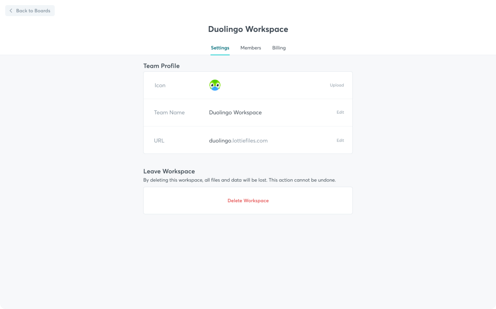

Workflow
Designing a file organization tool for lottie animations.
Role
Product Designer
Year
October 2020
Overview
LottieFiles is the biggest hub of everything lottie you need today. It offers people a large collection of lottie animations and all the tools you need to preview, export, test and implement your animations. Our community is the most important thing for us, everything we do is to provide them a better workflow and to bring visibility for those who create lottie animations.
When dealing with a big amount of lottie animations, organization and workflow can get a bit tricky. Teams usually work with structured libraries so files can be indexed and shared cross easily. Freelancers also need some sort of organization structure to index projects separately.
This is where LottieFiles new product idea comes in, to present a tool to organize and improve the flow when working with tons of lottie files.
Provide professional users and organizations with the ability to manage their workflow, projects, and assets in an efficient manner
Sitting together with PM, developer and co-founder we could define and list down in a notion document some fundamental parts of the project such as assumptions, feature requirements, ownership, planning details, rules and constraints.
Scaffolding to keep track of all features
Notion documentation.
Problem statement and goals
Today people struggle with a proper lottie workflow. They often use google drive, jira or slack to review and share animations. No possibility to create an organized library that allows them to keep track of versioning, features, adaptation regarding dark mode or feature checker.
Goal #1 Organization
The tool should enable users to organize their files in more than one level - having projects, sub projects and collections.
Goal #2 Collaboration
Teamwork and collaboration should be possible through commenting, tagging ongoing projects and version history.
Goal #3 Integration
The tool should integrate with other LottieFiles tools and plugins such as editing an animation using Editor and saving as a new version and uploading directly from AE using LF plugin.
We analysed multiple similar platforms for references in both design elements and how they structure their ownership, menus, sharing possibilities and project organization.
Our main references were: Figma, Linear, Pitch, Miro, Notion and frame.io
Some early explorations and sketches.
Exploring permissions, settings and sharing.
Exploration of main screens and menu.
Exploration timeline sizes for the commenting feature.
View of user journey. From the onboarding and moment a user chooses a plan to inside the tool and the navigation through its features.
User journey.
After wireframes, medium level exploration and technical validations with developers - we could agree with a final design:
Main dashboard. Hierarchy set on the left menu: It belongs firstly to the user and then to the team. Dark mode selection on bottom right for quick check on animation’s adaptability.
Project page. Animations and folders can be filtered in two different levels.
Card hover and dissection.
Multiple selection mode activates when you hover an animation and clicks on its checkbox.
Animation view page. Quick commenting function added to timeline so it is linked to a specific keyframe.

Workspace settings page.
Challenges and learning are always present in any design project. During the time I was involved in this feature I could map a few points to take with me to my career improvement
- Being the solo product designer in such a big and complex tool can be extremely overwhelming and challenging. Having the help of a PM and developer to set some rules and constraints was key to help me more forward.
- UI-wise was also a challenging project, since it has so many elements and components to put together. I don’t usually constrain myself too strictly to grids but in this specific project being extremely precise to a .8 grid helped me in making things look tidy and clean.
This project is still in its development stages and I am sure more learning and challenges will come with it and data collected after its launch.
This project is currently in its development stage.
Contact me to know more.
Thank you!
© (2021) Made with ♡ in Berlin